CONTENT OUTLINE 一、Java 集合进阶 1、 Collection 集合类 Java.util 包中的 Interface，是单例集合的顶层接口，它表示一组对象，这些对象也称为 Collection 的元素。
1 public Interface Collection<E> extends Iterable<E>
JDK不提供不包含任何直接实现，但提供了具体的子接口实现，如Set 和 List。
1.1 创建Collection集合的对象 1 2 3 4 5 6 7 8 9 10 11 12 public class Demo public static void main (String[] args) Collection<String> c = new ArrayList<>(); c.add("Hello" ); c.add("world" ); c.add("java" ); System.out.println(c); } }
1.2 常用方法
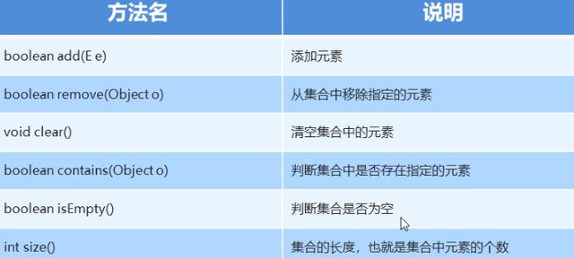
1.3 Collection 集合遍历 Iterator：迭代器，集合专用的遍历方式
Iterator<E> Iterator()：返回此集合中元素的迭代器，通过集合的 iterator 方法得到迭代器是依赖集合存在的 Iterator中的常用方法
E next()：返回迭代中的下一个元素boolean hasNext()：如果迭代具有更多元素，返回true1 2 3 4 5 6 7 8 9 10 11 12 13 14 15 16 17 18 19 20 21 22 23 24 25 26 27 28 public class Demo public static void main (String[] args) Collection<String> c = new ArrayList<>(); c.add("Hello" ); c.add("world" ); c.add("java" ); Iterator<String> it = c.iterator(); System.out.println(c.next()); while (it.hasNext()) { String s = it.next(); System.out.println(s); } } }
2、List 集合 1 2 3 import java.util.*;public Interface List<E> extends Collection<E>
有序集合（也称为序列 ），用户可以精确控制列表中每个元素的插入位置。用户可以通过整数索引 （列表中的位置|从0开始）访问元素，并搜索列表中的元素。 与Set集合不同，列表通常允许重复 的元素。 1 2 3 4 5 6 7 8 9 10 11 12 13 14 15 public class Demo public static void main (String[] args) List<String> l = new ArrayList<>(); l.add("Hello" ); l.add("world" ); l.add("java" ); l.add("Hello" ); Iterator<String> it = l.iterator(); while (it.hasNext()) { String s = it.next(); System.out.println(s); } } }
2.1 List 的特有方法
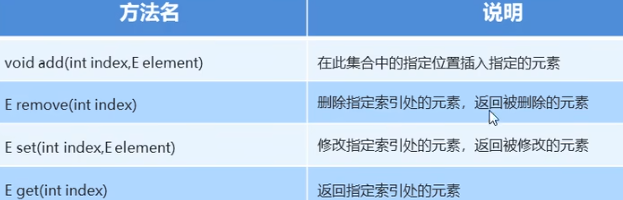
索引不允许越界，越界异常：IndexOutOfBoundException
对于 List 的遍历 ，除了使用迭代器，还可以使用循环+get()方法实现
1 2 3 4 for (int i=0 ; i<list.size(); i++) { Student s = list.get(i); System.out.println(...); }
2.2 并发修改异常 1 2 3 4 5 6 7 8 9 10 11 12 13 14 15 16 17 18 19 20 21 public class Demo public static void main (String[] args) List<String> l = new ArrayList<>(); l.add("Hello" ); l.add("world" ); l.add("java" ); Iterator<String> it = l.iterator(); while (it.hasNext()) { String s = it.next(); if (s.equals("world" )) { l.add("javaee" ); } } } }
问题出自 it.next()，分析如下：
1 2 3 4 5 6 7 8 9 10 11 12 13 14 15 16 17 18 19 20 21 22 23 24 25 26 27 28 29 30 31 32 33 34 35 36 37 38 39 40 41 42 43 44 45 46 47 48 49 50 public interface List <E > extends Collection <E > Iterator<E> iterator () ; boolean add (E e) } public abstract class AbstractList <E > protect int modCount = 0 ; } public class ArrayList <E > extends AbstractList <E > implements List <E > { public boolean add (E e) ensureCapacityInternal(size + 1 ); elementData[size++] = e; return true ; } public Iterator<E> iterator () return new Itr(); } private class Itr implements Iterator <E > int expectedModCount = modCount; @SuppressWarnings("unchecked") public E next () checkForComodification(); int i = cursor; if (i >= size) throw new NoSuchElementException(); Object[] elementData = ArrayList.this .elementData; if (i >= elementData.length) throw new ConcurrentModificationException(); cursor = i + 1 ; return (E) elementData[lastRet = i]; } @Override @SuppressWarnings("unchecked") final void checkForComodification () if (modCount != expectedModCount) throw new ConcurrentModificationException(); } } }
原因
实际修改集合的次数 ≠ 预期修改集合的次数 迭代器遍历过程中，通过集合对象修改了集合中元素的长度，造成迭代器获取元素中的判断失效（不一致） 解决 ：虽然 it.next() 做了判断，但是it.get() 没有做，即使用for循环遍历，然后用集合对象做对应的操作
1 2 3 4 5 6 7 8 9 10 11 12 13 public E get (int index) rangeCheck(index); return elementData(index); } for (int i=0 ; i<list.size(); i++) { String s = list.get(i); if (s.equals("world" )) { list.add("javaee" ); } }
2.3 ListIterator 列表迭代器
1 2 3 import java.util.*;public interface ListIterator <E > extends Iterator <E >
通过 listIterator() 方法得到，是 List 集合特有的迭代器 用于允许程序员沿任一方向 遍历列表的列表的迭代器，在迭代期间修改列表 ，并获取列表中迭代器的当前位置。 常用方法
E next()：返回迭代中的下一个元素【继承自父类】boolean hasNext()：如果迭代具有更多元素，返回true【继承自父类】E previous()：返回列表的上一个元素boolean hasPrevious()：如果此列表迭代器在相反方向遍历列表时具有更多元素，则返回Truevoid add(E e)：将指定元素插入列表
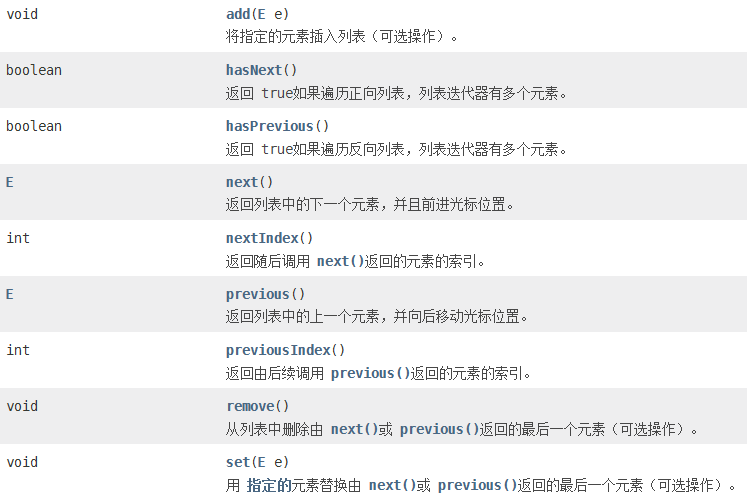
1 2 3 4 5 6 7 8 9 10 11 12 13 14 15 16 17 18 public class Demo public static void main (String[] args) List<String> l = new ArrayList<>(); l.add("Hello" ); l.add("world" ); l.add("java" ); ListIterator<String> it = l.listIterator(); while (it.hasNext()) { String s = it.next(); if (s.equals("world" )) { l.add("javaee" ); } } } }
2.4 增强for循环 为简化数组和Collection集合的遍历，JDK5之后
1 2 3 4 5 6 7 8 9 10 11 12 13 14 15 16 17 18 19 20 21 22 23 24 25 26 27 28 29 public Interface Collection<E> extends Iterable<E>;public interface Iterable <T >for (元素数据类型 变量名:数组或Collection集合) { } int [] arr=[1 ,2 ,3 ,4 ,5 ];for (int i:arr) { System.out.println(i); } for (String s: list) { System.out.println(s); } for (String s : list) { if (s.equals("world" )) { list.add("javaee" ); } }
三种遍历集合的方法
2.5 List集合的子类特点 常用子类：ArrayList【数组 | 常用】，LinkedList【链表】
1 2 3 4 5 6 7 public class ArrayList <E > extends AbstractList <E > implements List <E >public class LinkedList <E > extends AbstractSequentialList <E > implements List <E >, Deque <E >
2.6 LinkedList集合特有方法
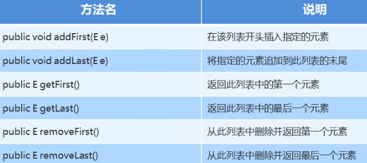
3、Set集合 3.1 Set 基本概述 1 public interface Set <E > extends Collection <E >
不包含重复元素的集合。 更正式地，集合不包含一对元素e1和e2 ，使得e1.equals(e2) ，并且最多一个空元素。 正如其名称所暗示的那样，这个接口模拟了数学集抽象。 没有带索引的方法，所以不能使用普通for循环，但可以使用增强for循环。 1 2 3 4 public class HashSet <E > extends AbstractSet <E > implements Set <E >
HashSet**对集合的迭代次序不作任何保证!**【即不保证存储和取出的元素顺序一致】
1 2 3 4 5 6 7 8 9 10 11 12 13 14 15 public class Demo public static void main (String[] args) Set<String> set = new HashSet<>(); set.add("Hello" ); set.add("Java" ); set.add("World" ); for (String s : set) { System.out.println(s); } } }
3.2 哈希值 哈希值：是JDK根据对象的地址或者字符串或者数字计算出来的数值。
Object 类中有个方法可以获取对象的哈希值
1 2 3 4 5 6 7 8 9 10 11 public int hashCode () public class Demo public static void main (String[] args) Student s1 = new Student("林青霞" , 30 ); System.out.println(s1.hashCode()); System.out.println(s1.hashCode()); } }
同一对象多次调用 hashCode() 返回的哈希值相同 默认情况下，不同对象的哈希值不同【如果重写 hashCode() 方法，哈希值可能相同】 字符串 String 重写的 hashCode() 方法 3.3 HashSet 集合的元素唯一性 1 2 3 4 5 6 7 8 9 10 11 12 13 14 15 16 17 18 19 20 21 22 23 24 25 26 27 28 29 30 31 32 33 34 35 36 37 38 39 40 41 42 43 44 45 46 47 48 49 50 51 52 53 54 55 56 57 58 59 60 61 62 63 64 65 66 67 68 69 70 71 72 73 74 75 76 77 78 79 80 81 82 83 84 set.add("Hello" ); public boolean add (E e) return map.put(e, PRESENT)==null ; } public V put (K key, V value) return putVal(hash(key), key, value, false , true ); } static final int hash (Object key) int h; return (key == null ) ? 0 : (h = key.hashCode()) ^ (h >>> 16 ); } final V putVal (int hash, K key, V value, boolean onlyIfAbsent, boolean evict) Node<K,V>[] tab; Node<K,V> p; int n, i; if ((tab = table) == null || (n = tab.length) == 0 ) n = (tab = resize()).length; if ((p = tab[i = (n - 1 ) & hash]) == null ) tab[i] = newNode(hash, key, value, null ); else { Node<K,V> e; K k; if (p.hash == hash && ((k = p.key) == key || (key != null && key.equals(k)))) e = p; else if (p instanceof TreeNode) e = ((TreeNode<K,V>)p).putTreeVal(this , tab, hash, key, value); else { for (int binCount = 0 ; ; ++binCount) { if ((e = p.next) == null ) { p.next = newNode(hash, key, value, null ); if (binCount >= TREEIFY_THRESHOLD - 1 ) treeifyBin(tab, hash); break ; } if (e.hash == hash && ((k = e.key) == key || (key != null && key.equals(k)))) break ; p = e; } } if (e != null ) { V oldValue = e.value; if (!onlyIfAbsent || oldValue == null ) e.value = value; afterNodeAccess(e); return oldValue; } } ++modCount; if (++size > threshold) resize(); afterNodeInsertion(evict); return null ; } ```  HashSet 集合存储元素，**要保证元素的唯一性，需要重写** `hashCode()` 和 `equals()` 方法 #### 3.4 数据结构之哈希表 - JDK8之前，底层采用数组+链表实现，可以说是一个元素为链表的数组【拉链法】 - JDK8之后，在长度比较长的时候，底层实现了优化 ```java HashSet()
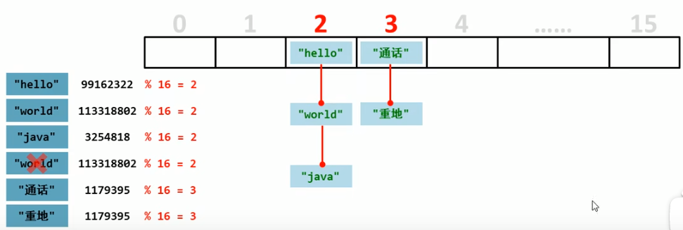
1 2 3 4 5 6 7 8 9 10 11 12 13 14 15 16 17 18 19 public class Demo public static void main (String[] args) HashSet<Student> hs = new HashSet<>(); Student s1 = new Student("林青霞" , 30 ); Student s2 = new Student("张曼玉" , 33 ); Student s3 = new Student("王祖贤" , 22 ); Student s4 = new Student("王祖贤" , 22 ); hs.add(s1); hs.add(s2); hs.add(s3); for (Student s : hs) { System.out.println(s.getName()+ " " + s.getAge()); } } }
3.5 LinkedHashSet 集合概述 1 public class LinkedHashSet <E > extends HashSet <E > implements Set <E >
哈希表和链表实现了Set接口，具有可预测的迭代次序。 由链表保证有序 【即存储和取出的次序固定】。这种实现不同于HashSet，它维持于所有条目的运行双向链表。 该链表定义了迭代排序，它是将元素插入集合（插入顺序 ） 的顺序 。 由哈希表保证元素唯一 1 2 3 4 5 6 7 8 9 10 11 12 13 14 15 16 public class Demo public static void main (String[] args) LinkedHashSet<String> l = new LinkedHashSet<>(); l.add("Hello" ); l.add("world" ); l.add("java" ); l.add("java" ); ListIterator<String> it = l.listIterator(); for (String s : l) { System.out.println(s); } } }
3.6 TreeSet 集合概述 1 2 3 4 5 6 7 8 9 10 11 12 13 14 15 16 17 18 19 20 21 22 23 public class TreeSet <E > extends AbstractSet <E > implements NavigableSet <E >public interface NavigableSet <E > extends SortedSet <E >public interface SortedSet <E > extends Set <E >public interface Comparable <T >public interface Comparator <T >TreeSet():根据元素的自然排序进行排序 TreeSet(Comparator comparator): 根据指定的比较器排序
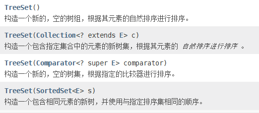
元素有序，这里的顺序不是指存储和取出的顺序，而是按照一定的规则进行排序，具体的排序方式取决于构造方法 没有带索引的方法，不能使用普通for循环 Set 集合，所以不包含重复元素 注意：集合存储引用类型，故 int 应使用其包装类 Integer
1 2 3 4 5 6 7 8 9 10 11 12 13 14 15 public class Demo public static void main (String[] args) TreeSet<Integer> ts = new TreeSet<>(); ts.add(10 ); ts.add(50 ); ts.add(23 ); ts.add(47 ); ts.add(15 ); for (Integer i : ts) { System.out.println(i); } } }
3.7 自然排序 Comparable 的使用 案例：
存储学生对象并遍历，创建TreeSet集合使用无参构造方法 要求：按年龄从小到大排序，按姓名字母顺序排序 1 2 3 4 5 6 7 8 9 10 11 12 13 14 15 16 17 18 19 20 21 22 23 24 25 26 27 28 29 30 31 32 33 34 35 36 37 38 39 40 41 42 43 44 import java.util.Objects;public class Student implements Comparable <Student > private String name; private int age; ... @Override public int compareTo (Student o) int num = this .age - o.age; int num2 = num == 0 ? this .name.compareTo(o.name) : num; return num2; } } import java.util.*;public class Demo public static void main (String[] args) TreeSet<Student> ts = new TreeSet<>(); Student s1 = new Student("西施" , 29 ); Student s2 = new Student("王昭君" , 28 ); Student s3 = new Student("貂蝉" , 30 ); Student s4 = new Student("杨玉环" , 33 ); Student s5 = new Student("林青霞" , 33 ); ts.add(s1); ts.add(s2); ts.add(s3); ts.add(s4); ts.add(s5); for (Student s : ts) { System.out.println(s.getName() + " " + s.getAge()); } } }
3.8 比较器排序 Comparator 的使用 案例：
存储学生对象并遍历，创建TreeSet集合使用带参构造方法 要求：按年龄从小到大排序，按姓名字母顺序排序 1 2 3 4 5 6 7 8 9 10 11 12 13 14 15 16 17 18 19 20 21 22 23 24 25 26 public class Demo public static void main (String[] args) TreeSet<Student> ts = new TreeSet<>(new Comparator<Student>() { @Override public int compare (Student o1, Student o2) int num1 = o1.getAge() - o2.getAge(); int num2 = num1 == 0 ? o1.getName().compareTo(o2.getName()); return num2; } }); Student s1 = new Student("西施" , 29 ); Student s2 = new Student("王昭君" , 28 ); Student s3 = new Student("貂蝉" , 30 ); Student s4 = new Student("杨玉环" , 33 ); Student s5 = new Student("林青霞" , 33 ); ts.add(s1); ts.add(s2); ts.add(s3); ts.add(s4); ts.add(s5); for (Student s : ts) { System.out.println(s.getName() + " " + s.getAge()); } } }
3.9 案例：不重复随机数 要求：获取10个1-20之间的随机数，要求不重复并输出
分析：随机数使用 Random()，不重复使用Set集合
1 2 3 4 5 6 7 8 9 10 11 12 13 14 public class Demo public static void main (String[] args) Set<Integer> set = new HashSet<>(); Random r = new Random(); while (set.size() < 10 ) { set.add(r.nextInt(20 ) + 1 ); } for (Integer s : set) { System.out.println(s); } } }
4、泛型 4.1 泛型概述 泛型，是JDK5 中引入的特性，它提供了编译时类型安全检测机制，该机制允许在编译时检测到非法的类型。
其本质时参数化类型 ，也就是说所操作的数据类型被指定为一个参数。
参数化类型 就是将类型由原来的类型参数化，然后在使用或者调用时传入具体的类型，这种参数类型可以在类、方法、接口中使用，分别被称为泛型类、泛型方法、泛型接口
泛型定义格式：
<类型>：指定一种类型的合适。这里的类型可以看成是形参 <类型1，类型2…>：指定多种类型的格式，多种类型之间用逗号隔开，这里的类型可以看成是形参 将来具体调用的时候给定的类型可以是实参，并且实参的类型只能是引用数据类型 1 2 3 4 5 6 7 8 9 10 11 12 13 14 15 16 17 18 19 20 21 22 23 24 25 26 27 28 29 30 31 32 33 34 35 36 37 public class Demo public static void main (String[] args) Collection c = new ArrayList(); c.add("Hello" ); c.add("World" ); c.add("Java" ); c.add(100 ); Iterator it = c.iterator(); while (it.hasNext()) { Object obj = it.next(); System.out.println((String) obj); } } } public class Demo public static void main (String[] args) Collection<String> c = new ArrayList<String>(); c.add("Hello" ); c.add("World" ); c.add("Java" ); Iterator<String> it = c.iterator(); while (it.hasNext()) { String s = it.next(); System.out.println(obj); } } }
泛型的好处
4.2 泛型类 1 2 3 4 5 6 7 8 9 10 11 12 13 14 15 16 17 18 19 20 21 22 23 24 public class Generic <T > private T t; public T getT () return t; } public void setT (T t) this .t = t; } } public class Demo public static void main (String[] args) Generic<String> g1 = new Generic<String>(); g1.setT("林青霞" ); System.out.println(g1.getT()); Generic<Integer> g2 = new Generic<Integer>(); g2.setT(30 ); System.out.println(g2.getT()); } }
4.3 泛型方法 泛型类的缺陷，创建对象必须指定类型；而使用泛型方法，可以等到调用方法时才指定类型。
1 2 3 4 5 6 7 8 9 10 11 12 13 14 15 public class Generic public <T> void show (T t) System.out.println(t); } } public class Demo public static void main (String[] args) Generic g = new Generic(); g.show("林青霞" ); g.show(30.2 ); } }
4.4 泛型接口 1 2 3 4 5 6 7 8 9 10 11 12 13 14 15 16 17 18 19 20 21 22 23 24 25 26 27 28 public interface Generic <T > void show (T t) } public class GenericImpl <T > implements Generic <T > @Override public void show (T t) System.out.println(t); } } public class Demo public static void main (String[] args) Generic<String> g1 = new GenericImpl<String>(); g1.show("林青霞" ); Generic<Integer> g2 = new GenericImpl<Integer>(); g2.show(30 ); } }
4.5 类型通配符 为了表示各种泛型List的父类，可以使用类型通配符
如果不希望List<?> 是任何泛型List的父类，而只希望它代表某一类泛型List的父类，可以使用类型通配符的上限
类型通配符上限：<?extends 类型> List <?extends Number> ：它表示的类型是Number或者其子类型除了可以指定类型通配符的上限，也可以指定类型通配符的下限
类型通配符下限：<?super 类型> List <?super Number> ：它表示的类型是Number或者其父类型1 2 3 4 5 6 7 8 9 10 11 12 13 14 15 16 17 18 public class Demo public static void main (String[] args) List<?> list1 = new ArrayList<Object>(); List<?> list2 = new ArrayList<Number>(); List<?> list3 = new ArrayList<Integer>(); System.out.println("----" ); List<?extends Number> list4 = new ArrayList<Number>(); List<?extends Number> list5 = new ArrayList<Integer>(); List<?super Number> list6 = new ArrayList<Object>(); List<?super Number> list7 = new ArrayList<Number>(); } }
4.6 可变参数 1 2 3 4 5 6 7 8 9 10 11 12 13 14 15 16 17 18 19 public class Demo public static void main (String[] args) System.out.println(sum(1 , 2 )); System.out.println(sum(1 , 2 , 3 )); System.out.println(sum(1 , 2 , 3 , 4 )); } public static int sum (int a, int b) return a + b; } public static int sum (int a, int b, int c) return a + b + c; } public static int sum (int a, int b, int c, int d) return a + b + c + d; } }
可变参数又称参数个数可变，用作方法的形参出现，那么方法参数的个数就是可变的了
格式：修饰符 返回值类型 方法名（数据类型... 变量名） 1 2 3 4 5 6 7 8 9 10 11 12 13 14 15 16 17 18 19 public class Demo public static void main (String[] args) System.out.println(sum(1 , 2 )); System.out.println(sum(1 , 2 , 3 )); System.out.println(sum(1 , 2 , 3 , 4 )); } public static int sum (int ... a) System.out.println(a); int sum = 0 ; for (int i : a) { sum += i; } return sum; } }
注意：可变参数放在参数列表最后
1 2 3 4 public static int sum (int b, int ... a) ... return ...; }
4.7 可变参数的使用 Array类中，static <T> List<T> asList(T... a)：返回由指定数组支持的固定大小的列表List接口中，static <E> List<E> of(E... elements)：返回包含任意数量元素的不可变列表Set接口中，static <E> Set<E> of(E... elements)：返回包含任意数量元素的不可变列表1 2 3 4 5 6 7 8 9 10 11 12 13 14 15 16 17 18 public class Demo public static void main (String[] args) List<String> list = Arrays.asList("hello" , "world" , "java" ); list.set(1 , "javaee" ); List<String> list = List.of("hello" , "world" , "java" ); Set<String> set = Set.of("hello" , "world" , "java" ); } }
5、Map集合 1 public interface Map <K ,V >
将键映射到值的对象 Map不能包含重复的键每个键可以映射到最多一个值 1 2 3 4 5 6 7 8 9 10 11 12 13 import java.util.*;public class Demo public static void main (String[] args) Map<String, String> map = new HashMap<>(); map.put("001" , "林青霞" ); map.put("002" , "张曼玉" ); map.put("003" , "王祖贤" ); System.out.println(map); } }
5.1 基本方法
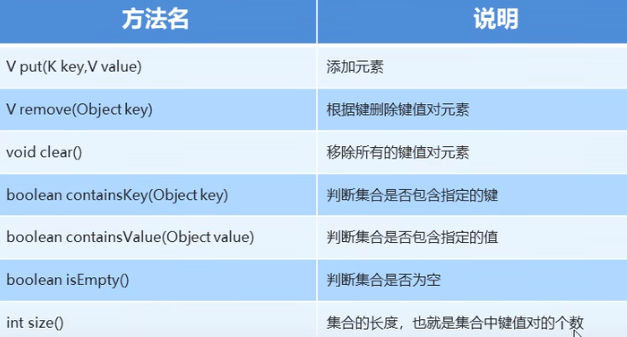
5.2 获取功能 方法名 说明 V get(Object key) 根据键获取值 SetkeySet() 获取所有键的集合 Collectionvalue() 获取所有值的集合[可能重复] Set<Map.Entry<K, V>> entrySet() 获取所有键值对对象的集合
1 2 3 4 5 6 7 8 9 10 11 12 13 14 15 16 17 18 19 20 21 import java.util.*;public class Demo public static void main (String[] args) Map<String, String> map = new HashMap<>(); map.put("001" , "林青霞" ); map.put("002" , "张曼玉" ); map.put("003" , "王祖贤" ); System.out.println(map.get("001" ) + map.get("000" )); Set<String> keySet = map.keySet(); for (String s : keySet) { System.out.println(s); } Collection<String> values = map.values(); for (String s:values) { System.out.println(s); } } }
5.3 Map遍历 思路一 所有元素成对出现，先把获取键的集合：keySet() 遍历键的集合，获取每一个键：增强for 根据键去找值：get(Object key) 思路二 获取所有键值对对象的集合：entrySet() 遍历键值对对象的集合，得到每个键值对对象：增强for得到每一个Map.Entry 对于键值对对象Map.Entry：getKey()、getValue() 1 2 3 4 5 6 7 8 9 10 11 12 13 14 15 16 17 18 19 20 21 22 23 import java.util.*;public class Demo public static void main (String[] args) Map<String, String> map = new HashMap<>(); map.put("001" , "林青霞" ); map.put("002" , "张曼玉" ); map.put("003" , "王祖贤" ); Set<String> keySet = map.keySet(); for (String s : keySet) { String value = map.get(s); System.out.println(s + ":" + value); } Set<Map.Entry<String, String>> entrySet = map.entrySet(); for (Map.Entry<String, String> me : entrySet) { String key = me.getKey(); String value = me.getValue(); System.out.println(key + ":" + value); } } }
案例1
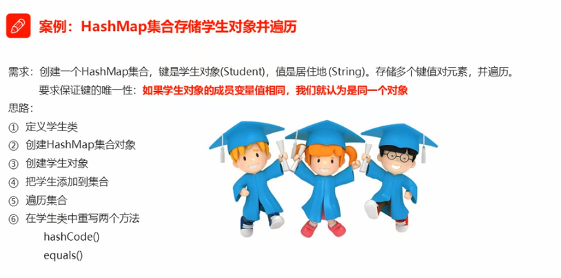
案例2
需求：创建一个ArrayList集合，存储三个元素，每一个元素都是HashMap，每一个HashMap的键和值都是String，并遍历
1 2 3 4 5 6 7 8 9 10 11 12 13 14 15 16 17 18 19 20 21 22 23 24 25 26 27 import java.util.*;public class Demo public static void main (String[] args) ArrayList<HashMap<String, String>> array = new ArrayList<HashMap<String, String>>(); HashMap<String, String> hm1 = new HashMap<>(); HashMap<String, String> hm2 = new HashMap<>(); HashMap<String, String> hm3 = new HashMap<>(); hm1.put("孙策" , "大乔" ); hm1.put("周瑜" , "小乔" ); array.add(hm1); hm2.put("郭靖" , "黄蓉" ); hm3.put("杨过" , "小龙女" ); array.add(hm2); hm3.put("令狐冲" , "任盈盈" ); hm3.put("林平之" , "岳灵珊" ); array.add(hm3); for (HashMap<String, String> hm : array) { Set<String> keySet = hm.keySet(); for (String key : keySet) { String value = hm.get(key); System.out.println(key + ":" + value); } } } }
案例3：统计字符串中每个字符出现的次数
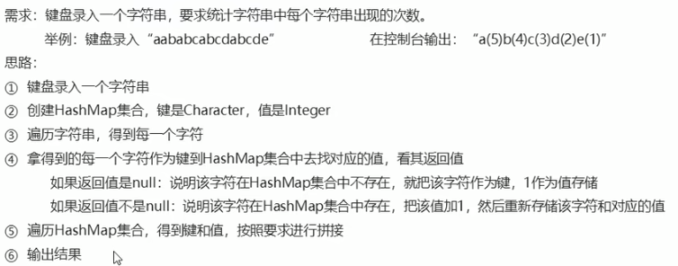
1 2 3 4 5 6 7 8 9 10 11 12 13 14 15 16 17 18 19 20 21 22 23 24 25 26 27 28 29 30 31 import java.util.*;public class Demo public static void main (String[] args) Scanner sc = new Scanner(System.in); System.out.println("请输入一个字符串：" ); String line = sc.nextLine(); TreeMap<Character, Integer> hm = new TreeMap<>(); for (int i =0 ;i<line.length();i++) { char c = line.charAt(i); Integer value = hm.get(c); if (value == null ) { hm.put(c, 1 ); } else { hm.put(c,++value); } } StringBuffer sb = new StringBuffer(); Set<Character> keySet = hm.keySet(); for (Character key:keySet) { Integer value = hm.get(key); sb.append(key).append("(" ).append(value).append(")" ); } System.out.println(sb.toString()); } }
6、Collections 1 2 3 4 5 java.lang.Object java.util.Collections Class Collections
此类仅由静态方法组合或返回集合。 它包含对集合进行操作的多态算法，“包装器”，返回由指定集合支持的新集合，以及其他一些可能的和最终的。
常用方法 public static <T extends Comparable<?super T>> void sort(List<T> list)：将指定的列表按升序排序public static void reverse(List<?> list) ：反转指定列表中元素的顺序public static void shuffle(List<?> list)：使用默认的随机源随机排列指定列表【随机置换】1 2 3 4 5 6 7 8 9 10 11 12 13 14 15 16 17 18 19 20 21 import java.util.*;public class Demo public static void main (String[] args) List<Integer> list = new ArrayList<>(); list.add(30 ); list.add(20 ); list.add(50 ); list.add(10 ); list.add(40 ); System.out.println(list); Collections.sort(list); System.out.println(list);; Collections.reverse(list); System.out.println(list); Collections.shuffle(list); System.out.println(list); } }
案例一 借助Collections，使用ArrayList
需求；ArrayList存储学生对象，使用Collections对ArrayList进行排序；并要求按照年龄从小到大，年龄相同时按照姓名字母顺序排序
1 2 3 4 5 6 7 8 9 10 11 12 13 14 15 16 17 18 19 20 21 22 23 24 25 26 27 28 29 30 import java.util.*;public class Demo public static void main (String[] args) ArrayList<Student> array = new ArrayList<>(); Student s1 = new Student("linqingxia" , 30 ); Student s2 = new Student("zhangmanyu" , 35 ); Student s3 = new Student("wangzuxian" , 33 ); Student s4 = new Student("liuyan" , 33 ); array.add(s1); array.add(s2); array.add(s3); array.add(s4); Collections.sort(array, new Comparator<Student>() { @Override public int compare (Student o1, Student o2) int num = o1.getAge() - o2.getAge(); int num2 = num == 0 ? o1.getName().compareTo(o2.getName()) : num; return num2; } }); for (Student s : array) { System.out.println(s.getName() + ":" + s.getAge()); } } }
案例二 需求 ：实现斗地主过程的洗牌、发牌、看牌
思路
创建牌盒【ArrayList】 往牌盒装牌 洗牌打散【Collections.shuffle()】 发牌【集合遍历】 看牌【集合遍历】 1 2 3 4 5 6 7 8 9 10 11 12 13 14 15 16 17 18 19 20 21 22 23 24 25 26 27 28 29 30 31 32 33 34 35 36 37 38 39 40 41 42 43 44 45 46 47 48 49 50 51 52 53 54 55 import java.util.*;public class Demo public static void main (String[] args) ArrayList<String> array = new ArrayList<>(); String[] colors = {"♦" , "♣" , "♥" , "♠" }; String[] numbers = {"2" , "3" , "4" , "5" , "6" , "7" , "8" , "9" , "10" , "J" , "Q" , "K" }; for (String color : colors) { for (String num : numbers) { array.add(color + num); } } array.add("小王" ); array.add("大王" ); Collections.shuffle(array); ArrayList<String> player1 = new ArrayList<>(); ArrayList<String> player2 = new ArrayList<>(); ArrayList<String> player3 = new ArrayList<>(); ArrayList<String> dipai = new ArrayList<>(); for (int i = 0 ; i < array.size(); i++) { String poker = array.get(i); if (i >= array.size() - 3 ) { dipai.add(poker); } else if (i % 3 == 0 ) { player1.add(poker); } else if (i % 3 == 1 ) { player2.add(poker); } else if (i % 3 == 2 ) { player3.add(poker); } } lookPoker("林青霞" , player1); lookPoker("柳岩" , player2); lookPoker("风清扬" , player3); lookPoker("底牌" , dipai); } public static void lookPoker (String name,ArrayList<String> array) System.out.println(name+"的牌的是:" ); for (String poker:array) { System.out.print(poker+" " ); } System.out.println(); } }
案例三 对案例三的牌进行排序
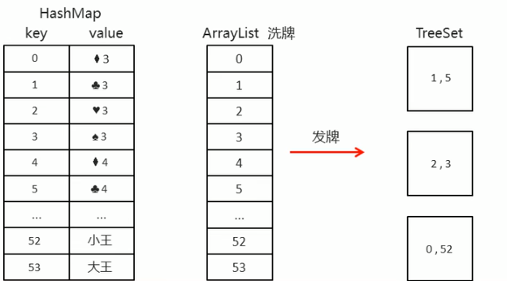
思路
创建HashMap，键是编号，值是牌 创建ArrayList，存储编号 创建花色数组和点数数组 从0开始往HashMap里存储编号，并存储相应的牌，同时往ArrayList里存储编号 洗牌【Collections.shuffle()】 发牌【TreeSet】 看牌：获得编号，到HashMap中找对应的牌 1 2 3 4 5 6 7 8 9 10 11 12 13 14 15 16 17 18 19 20 21 22 23 24 25 26 27 28 29 30 31 32 33 34 35 36 37 38 39 40 41 42 43 44 45 46 47 48 49 50 51 52 53 54 55 56 57 58 59 60 61 62 import java.util.*;public class Demo public static void main (String[] args) HashMap<Integer, String> hm = new HashMap<>(); ArrayList<Integer> array = new ArrayList<>(); String[] colors = {"♦" , "♣" , "♥" , "♠" }; String[] numbers = {"3" , "4" , "5" , "6" , "7" , "8" , "9" , "10" , "J" , "Q" , "K" , "2" }; int index = 0 ; for (String num : numbers) { for (String color : colors) { hm.put(index, color + num); array.add(index); index++; } } hm.put(index, "小王" ); array.add(index++); hm.put(index, "大王" ); array.add(index); Collections.shuffle(array); TreeSet<Integer> player1 = new TreeSet<>(); TreeSet<Integer> player2 = new TreeSet<>(); TreeSet<Integer> player3 = new TreeSet<>(); TreeSet<Integer> dipai = new TreeSet<>(); for (int i = 0 ; i < array.size(); i++) { int poker = array.get(i); if (i >= array.size() - 3 ) { dipai.add(poker); } else if (i % 3 == 0 ) { player1.add(poker); } else if (i % 3 == 1 ) { player2.add(poker); } else if (i % 3 == 2 ) { player3.add(poker); } } lookPoker("林青霞" , player1, hm); lookPoker("柳岩" , player2, hm); lookPoker("风清扬" , player3, hm); lookPoker("底牌" , dipai, hm); } public static void lookPoker (String name, TreeSet<Integer> array, HashMap<Integer, String> hm) System.out.println(name + "的牌的是:" ); for (Integer poker : array) { System.out.print(hm.get(poker) + " " ); } System.out.println(); } }
二、IO流 1、File 1.1 File 概述 1 2 3 Class File java.lang.Object java.io.File
它是文件和目录路径名的抽象表示
文件和目录是可以通过File封装成对象的 对于File来说，其封装的并不是一个真正存在的文件，仅仅是一个路径名而已。它可以存在，也可以不存在，之后是要通过具体的操作将这个路径的内容转换为具体存在的 方法名 说明 File(String pathname) 通过给定的路径名字符串转换为抽象路径名来创建新的File实例 File(String parent, String child) 从父路径名字符串和子路径名字符串创建新的File实例 File(File parent, String child) 从父抽象路径名和子路径名字符串创建新的File实例
1 2 3 4 5 6 7 8 9 10 11 12 13 14 15 16 17 18 19 20 import java.io.File;import java.io.IOException;public class Demo public static void main (String[] args) throws IOException File f1 = new File("C:\\Users\\Stell\\Desktop\\java.txt" ); System.out.println(f1); File f2 = new File("C:\\Users\\Stell\\Desktop" , "java.txt" ); System.out.println(f2); File f3 = new File("C:\\Users\\Stell\\Desktop" ); File f4 = new File(f3, "java.txt" ); System.out.println(f4); } }
1.2 File类创建功能 方法名 说明 public bolean createNewFile() 当具有该名称的文件不存在时，创建由此抽象路径名命名的新空文件 public boolean mkdir() 创建由此抽象路径名命名的目录 public boolean mkdirs() 创建由此抽象路径名命名的目录，包括任何必需但不存在的父目录【创建多级目录】
1 2 3 4 5 6 7 8 9 10 11 12 13 14 15 16 17 18 19 20 import java.io.File;import java.io.IOException;public class Demo public static void main (String[] args) throws IOException File f1 = new File("C:\\Users\\Stell\\Desktop\\java.txt" ); System.out.println(f1.createNewFile()); File f2 = new File("C:\\Users\\Stell\\Desktop\\javaSE" ); System.out.println(f2.mkdir()); File f3 = new File("C:\\Users\\Stell\\Desktop\\javaWEB\\HTML" ); System.out.println(f3.mkdirs()); File f4 = new File("C:\\Users\\Stell\\Desktop\\javase.txt" ); System.out.println(f4.mkdir()); System.out.println(f4.createNewFile()); } }
1.3 File类判断和获取功能
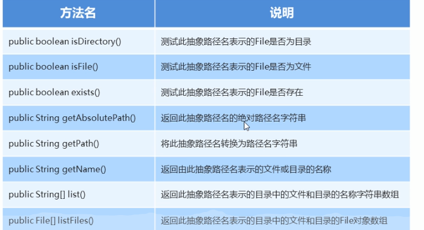
1 2 3 4 5 6 7 8 9 10 11 12 13 14 15 16 17 18 19 20 21 22 23 24 25 26 27 28 29 30 31 32 33 34 35 36 37 import java.io.File;import java.io.IOException;public class Demo public static void main (String[] args) throws IOException File f1 = new File("C:\\Users\\Stell\\Desktop\\java.txt" ); System.out.println(f1.isDirectory()); System.out.println(f1.isFile()); System.out.println(f1.exists()); System.out.println(f1.getAbsolutePath()); System.out.println(f1.getPath()); System.out.println(f1.getName()); System.out.println("-----------" ); File f2 = new File("C:\\Users\\Stell\\Desktop" ); String[] strArray = f2.list(); for (String str : strArray) { System.out.println(str); } File[] fileArray = f2.listFiles(); for (File file : fileArray) { if (file.isFile()){ System.out.println(file); System.out.println(file.getName()); } } } }
1.4 File类删除功能
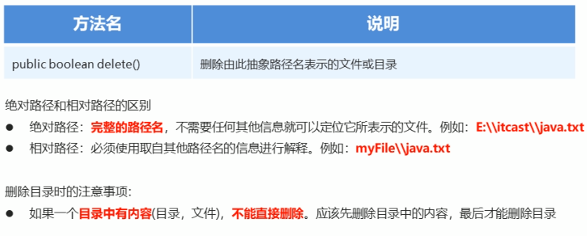
1 2 3 4 5 6 7 8 9 10 11 12 13 14 15 16 17 18 19 20 21 22 23 24 25 import java.io.File;import java.io.IOException;public class Demo public static void main (String[] args) throws IOException File f1 = new File("demo\\java.txt" ); System.out.println(f1.createNewFile()); System.out.println(f1.delete()); File f2 = new File("demo\\javaee" ); System.out.println(f2.mkdir()); System.out.println(f2.delete()); File f3 = new File("demo\\javaee" ); System.out.println(f3.mkdir()); File f4 = new File("demo\\javaee\\java.txt" ); System.out.println(f4.createNewFile()); System.out.println(f4.delete()); System.out.println(f3.delete()); } }
1.5 递归遍历目录
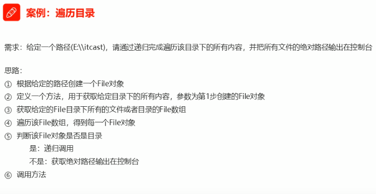
1 2 3 4 5 6 7 8 9 10 11 12 13 14 15 16 17 18 19 20 21 22 23 24 25 26 import java.io.File;import java.io.IOException;public class Demo public static void main (String[] args) throws IOException File file = new File("C:\\Users\\Stell\\Desktop" ); getAllFilePath(file); } public static void getAllFilePath (File srcFile) File[] fileArray = srcFile.listFiles(); if (fileArray != null ) { for (File file : fileArray) { if (file.isDirectory()) { getAllFilePath(file); } else { System.out.println(file.getAbsolutePath()); } } } } }
2、字节流 IO：输入/输出 流：一种抽象的概念，是对数据传输的总称，本质是数据的传输 IO流就是用来处理设备间数据传输问题的【文件复制|上传|下载】 IO流分类
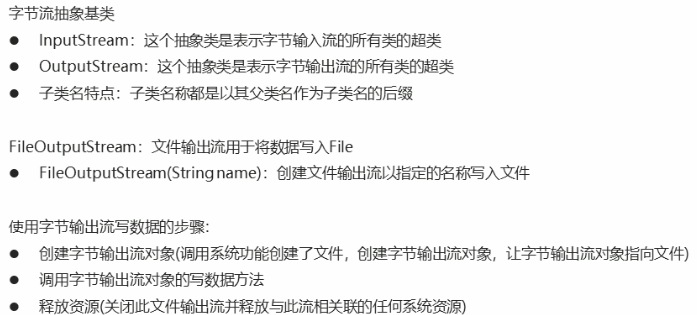
1 2 3 4 5 6 7 8 9 10 11 public abstract class InputStream extends Object implements Closeable // 抽象类：是表示字节输出流的所有类的超类 public abstract class OutputStream extends Object implements Closeable , Flushable // 子类名称特点：子类名称都是以其父类名作为子类后缀 // 如文件输出流：创建文件输出流以指定的名称写入文件 FileOutputStream (String name )
1 2 3 4 5 6 7 8 9 10 11 12 13 14 15 16 17 18 19 20 21 22 23 import java.io.FileOutputStream;import java.io.IOException;public class Demo public static void main (String[] args) throws IOException FileOutputStream fos = new FileOutputStream("C:\\Users\\Stell\\Desktop\\fos.txt" ); fos.write(97 ); fos.write(57 ); fos.write(55 ); fos.close(); } }
2.1 字节流写数据的三种方式 方法名 说明 void write(int b) 将指定的字节写入此文件输出流【一次一字节】 void write(byte[] b) 将b.length字节从指定的字节数组写入此文件输出流【一次一字节数组】 void write(byte[] b, int off, int len) 将len字节从指定的字节数组开始，从偏移量off开始写入此文件输出流【一次一字节数组的部分数据】
1 2 3 4 5 6 7 8 9 10 11 12 13 14 15 16 17 18 19 20 21 22 23 24 25 26 27 28 29 30 31 32 import java.io.File;import java.io.FileOutputStream;import java.io.IOException;public class Demo public static void main (String[] args) throws IOException FileOutputStream fos1 = new FileOutputStream("C:\\Users\\Stell\\Desktop\\fos.txt" ); File file = new File("C:\\Users\\Stell\\Desktop\\fos.txt" ); FileOutputStream fos2 = new FileOutputStream(file); fos1.write(97 ); fos1.write(98 ); fos1.write(99 ); fos1.write(100 ); byte [] b = {97 , 98 , 99 , 100 }; fos1.write(b); fos1.write("abcd" .getBytes()); fos1.write(b, 0 , b.length - 1 ); fos1.close(); fos2.close(); } }
2.2 字节流写数据的两个问题 1 2 3 4 5 6 7 8 9 10 11 12 13 14 15 16 17 18 19 20 import java.io.FileOutputStream;import java.io.IOException;public class Main public static void main (String[] args) throws IOException FileOutputStream fos = new FileOutputStream("C:\\Users\\Stell\\Desktop\\fos.txt" ); for (int i=0 ;i<10 ;i++){ fos.write("hello" .getBytes()); fos.write("\n" .getBytes()); } fos.close(); } }
2.3 字节流写数据的异常处理 1 2 3 4 5 6 7 8 9 10 11 12 13 14 15 16 17 18 19 20 21 22 23 24 25 26 27 28 29 import java.io.FileOutputStream;import java.io.IOException;public class Main public static void main (String[] args) FileOutputStream fos = null ; try { fos = new FileOutputStream("C:\\Users\\Stell\\Desktop\\fos.txt" ); fos.write("hello" .getBytes()); } catch (IOException e) { e.printStackTrace(); } finally { if (fos != null ) { try { fos.close(); } catch (IOException e) { e.printStackTrace(); } } } } }
2.4 字节流读数据【一次一字节】 public class FileInputStream extends InputStream
从文件系统中的文件获取输入字节，什么文件可用取决于主机环境。
FileInputStream用于读取诸如图像数据的原始字节流。 要阅读字符串，请考虑使用 FileReader
构造方法
使用字节输入流读数据的步骤
① 创建字节输入流对象
② 调用字节输入流对象的读数据方法
③ 释放资源
1 2 3 4 5 6 7 8 9 10 11 12 13 14 15 16 17 18 19 import java.io.FileInputStream;import java.io.IOException;public class Main public static void main (String[] args) throws IOException FileInputStream fis = new FileInputStream("C:\\Users\\Stell\\Desktop\\fos.txt" ); int b = fis.read(); System.out.println(b); System.out.println((char ) b); while ((b = fis.read()) != -1 ) { System.out.print((char ) b); } fis.close(); } }
案例：复制文本文件
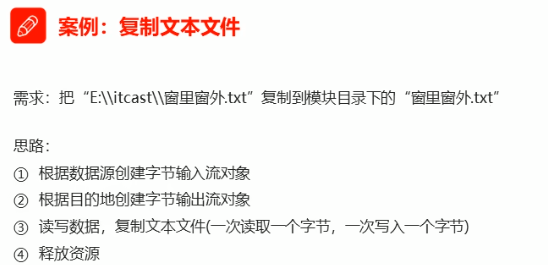
1 2 3 4 5 6 7 8 9 10 11 12 13 14 15 16 17 18 import java.io.FileInputStream;import java.io.FileOutputStream;import java.io.IOException;public class Main public static void main (String[] args) throws IOException FileOutputStream fos = new FileOutputStream("C:\\Users\\Stell\\Desktop\\target.txt" ); FileInputStream fis = new FileInputStream("C:\\Users\\Stell\\Desktop\\source.txt" ); int by; while ((by = fis.read()) != -1 ) { fos.write(by); } fis.close(); fos.close(); } }
2.5 字节流读数据【一次一字节数组】 1 2 3 4 5 6 7 8 9 10 11 12 13 14 15 16 17 18 19 20 21 22 23 24 25 26 import java.io.FileInputStream;import java.io.IOException;public class Main public static void main (String[] args) throws IOException FileInputStream fis = new FileInputStream("C:\\Users\\Stell\\Desktop\\source.txt" ); byte [] bys = new byte [5 ]; int len = fis.read(bys); System.out.println(len); System.out.println(new String(bys)); System.out.println(new String(bys,0 ,len)); byte [] by = new byte [1024 ]; while ((len= fis.read(by)) != -1 ){ System.out.print(new String(by, 0 , len)); } fis.close(); } }
案例：读取图片
1 2 3 4 5 6 7 8 9 10 11 12 13 14 15 16 17 18 19 import java.io.FileInputStream;import java.io.FileOutputStream;import java.io.IOException;public class Main public static void main (String[] args) throws IOException FileOutputStream fos = new FileOutputStream("C:\\Users\\Stell\\Desktop\\target.jpg" ); FileInputStream fis = new FileInputStream("C:\\Users\\Stell\\Desktop\\source.jpg" ); byte [] bys = new byte [1024 ]; int len; while ((len = fis.read(bys)) != -1 ) { fos.write(bys,0 ,len); } fis.close(); fos.close(); } }
2.6 字节缓冲流 该类实现缓冲输入输出流
BufferedOutputStream：通过设置这样的输出流，应用程序可以向底层输出流 写入字节，而不必为写入的每个字节导致底层系统的调用BufferedInputStream：当创建BufferedInputStream时，将创建一个内部缓冲区数组。缓冲输入和支持mark和reset方法的功能【当从流中读取或跳过字节时，内部缓冲区将根据需要从所包含的输入流中重新填充，一次有多个字节】mark操作会记住输入流中的一点reset操作会导致从最近的mark操作之后读取的所有字节在从包含的输入流中取出新的字节之前重新读取1 2 3 4 5 6 7 8 java.lang.Object java.io.OutputStream java.io.FilterOutputStream java.io.BufferedOutputStream public class FilterOutputStream extends OutputStream // 与上对应 public class BufferedInputStream extends FilterInputStream
构造方法
FilterOutputStream(OutputStream out)
FilterInputStream(InputStream in)
【注意：字节缓冲流仅仅提供缓冲区，而真正的读写数据还得依靠基本的字节流对象进行】
1 2 3 4 5 6 7 8 9 10 11 12 13 14 15 16 17 18 19 20 21 22 23 24 25 26 27 28 29 30 31 32 33 34 import java.io.*;public class Main public static void main (String[] args) throws IOException BufferedOutputStream bos = new BufferedOutputStream(new FileOutputStream("C:\\Users\\Stell\\Desktop\\target.txt" )); bos.write("hello\r\n" .getBytes()); bos.write("world\r\n" .getBytes()); bos.close(); BufferedInputStream bis = new BufferedInputStream(new FileInputStream("C:\\Users\\Stell\\Desktop\\source.txt" )); int by; while ((by = bis.read()) != -1 ) { System.out.print((char ) by); } byte [] bys = new byte [1024 ]; int len; while ((len = bis.read(bys)) != -1 ) { System.out.print(new String(bys, 0 , len)); } bis.close(); } }
案例：复制视频
思路：
根据数据源创建字节输入流对象 根据目的地址创建字节输出流对象 读写数据基本字节流【一次一字节】 基本字节流【一次一字节数组】 字节缓冲流【一次一字节】 字节缓冲流【一次一字节数组】 释放资源 1 2 3 4 5 6 7 8 9 10 11 12 13 14 15 16 17 18 19 20 21 22 23 24 25 26 27 28 29 30 31 32 33 34 35 36 37 38 39 40 41 42 43 44 45 46 47 48 49 50 51 52 53 54 55 56 57 58 59 60 61 62 63 64 65 66 67 68 69 70 71 72 73 74 75 76 77 78 79 80 81 82 import java.io.*;public class Main public static void main (String[] args) throws IOException long startTime = System.currentTimeMillis(); method3(); long endTime = System.currentTimeMillis(); System.out.println("耗时：" + (endTime - startTime) + "ms" ); } public static void method1 () throws IOException FileOutputStream fos = new FileOutputStream("C:\\Users\\Stell\\Desktop\\target1.mp4" ); FileInputStream fis = new FileInputStream("C:\\Users\\Stell\\Desktop\\source.mp4" ); int by; while ((by = fis.read()) != -1 ) { fos.write(by); } fis.close(); fos.close(); } public static void method2 () throws IOException FileOutputStream fos = new FileOutputStream("C:\\Users\\Stell\\Desktop\\target1.mp4" ); FileInputStream fis = new FileInputStream("C:\\Users\\Stell\\Desktop\\source.mp4" ); byte [] bys = new byte [1024 ]; int len; while ((len = fis.read(bys)) != -1 ) { fos.write(bys, 0 ,len); } fis.close(); fos.close(); } public static void method3 () throws IOException FileOutputStream fos = new FileOutputStream("C:\\Users\\Stell\\Desktop\\target1.mp4" ); FileInputStream fis = new FileInputStream("C:\\Users\\Stell\\Desktop\\source.mp4" ); BufferedInputStream bis = new BufferedInputStream(fis); BufferedOutputStream bos = new BufferedOutputStream(fos); int by; while ((by = bis.read()) != -1 ) { bos.write(by); } bis.close(); bos.close(); } public static void method4 () throws IOException FileOutputStream fos = new FileOutputStream("C:\\Users\\Stell\\Desktop\\target1.mp4" ); FileInputStream fis = new FileInputStream("C:\\Users\\Stell\\Desktop\\source.mp4" ); BufferedInputStream bis = new BufferedInputStream(fis); BufferedOutputStream bos = new BufferedOutputStream(fos); byte [] bys = new byte [1024 ]; int len; while ((len = bis.read(bys)) != -1 ) { bos.write(bys, 0 ,len); } bis.close(); bos.close(); } }
2.7 小结
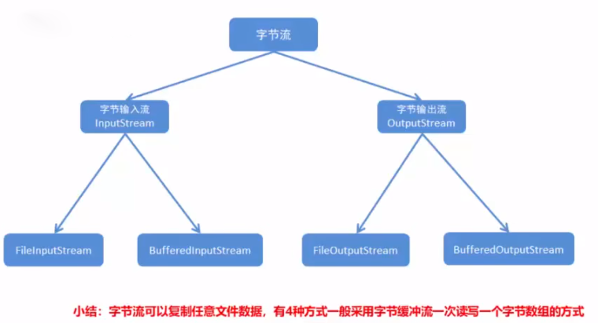
3、字符流 3.1 为什么出现字符流 1 2 3 4 5 6 7 8 9 10 11 12 13 import java.io.FileInputStream;import java.io.IOException;public class Main public static void main (String[] args) throws IOException FileInputStream fis = new FileInputStream("C:\\Users\\Stell\\Desktop\\source.txt" ); int by; while ((by = fis.read()) != -1 ) { System.out.print((char ) by); } fis.close(); } }
一个汉字的存储：
如果输入输出汉字等，则需要字符流，否则乱码
1 2 3 4 5 6 7 8 9 10 11 12 13 14 15 16 import java.io.UnsupportedEncodingException;import java.util.Arrays;public class Main public static void main (String[] args) throws UnsupportedEncodingException String s = "abc" ; byte [] bys1 = s.getBytes(); System.out.println(Arrays.toString(bys1)); String s2 = "中国" ; byte [] bys2 = s2.getBytes("UTF-8" ); System.out.println(Arrays.toString(bys2)); byte [] bys3 = s2.getBytes("GBK" ); System.out.println(Arrays.toString(bys3)); } }
由于字节流操作中文不方便，故Java就提供字符流：字符流 = 字节流 + 编码表
另外，使用字节流复制文本时，文本文件有中文，但复制无误，原因是最终底层操作会自动进行字节拼接成中文 。但如何识别是中文呢？
汉字在存储时，无论选择哪一种编码存储，每一个字节都是负数 3.2 编码表
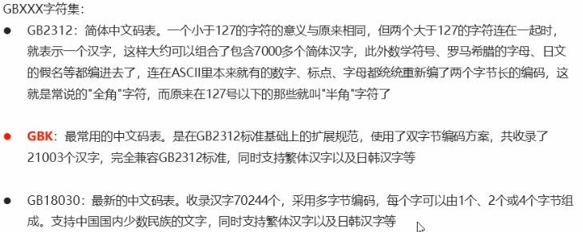
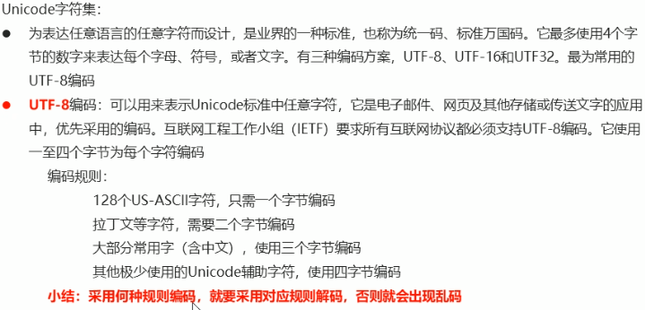
3.3 编码解码 编码
byte[] getBytes()：使用平台默认字符集将该String 编码为一系列字节，将结果存储在新的字节数组中byte[] getBytes(String charseName)：使用指定的字符集将字符串编码为一系列字节，将结果存储在新的字节数组中解码
String(byte[] bytes)：使用平台默认字符集解码指定的字节数组来构造新的字符串String(byte[] bytes, String charseName)：使用指定的字符集解码指定的字节数组来构造新的字符串3.4 字符流中的编码解码问题 字符流抽象类
Reader：字符输入流的抽象类Writer：字符输出流的抽象类字符流中与编码解码问题相关 的两个类
InputStreamReader：是从字节流到字符流的桥梁：它读取字节，并使用指定的charset将其解码为字符【字符集可被指定，或默认】OutputStreamWriter：是从字符流到字节流的桥梁：使用指定的charset将其编码为字节【字符集可被指定，或默认】1 2 3 4 5 6 7 8 9 10 11 12 13 14 15 16 17 java.lang.Object java.io.Reader java.io.InputStreamReader public class InputStreamReader extends Reader java .lang .Object java .io .Writer java .io .OutputStreamWriter public class OutputStreamWriter extends Writer OutputStreamWriter(OutputStream out); OutputStreamWriter(OutputStream out, Charset cs);
案例
1 2 3 4 5 6 7 8 9 10 11 12 13 14 15 16 17 18 19 20 21 22 23 import java.io.*;public class Main public static void main (String[] args) throws IOException OutputStreamWriter osw = new OutputStreamWriter(new FileOutputStream("C:\\Users\\Stell\\Desktop\\target.txt" ), "GBK" ); osw.write("中国2" ); osw.close(); InputStreamReader isr = new InputStreamReader(new FileInputStream("C:\\Users\\Stell\\Desktop\\target.txt" ), "GBK" ); int ch; while ((ch = isr.read()) != -1 ) { System.out.print((char )ch); } } }
3.5 字符流写数据的五种方式 方法名 说明 void write(int c) 写一个字符 void write(char[] cbuf) 写入一个字符数组 void write(char[] cbuf, int off, int len) 写入字符数组的一部分 void write(String str) 写一个字符串 void write(String str, int off, int len) 写一个字符串的一部分
1 2 3 4 5 6 7 8 9 10 11 12 13 14 15 16 17 18 19 20 21 22 23 import java.io.*;public class Main public static void main (String[] args) throws IOException OutputStreamWriter osw = new OutputStreamWriter(new FileOutputStream("C:\\Users\\Stell\\Desktop\\target.txt" ), "GBK" ); osw.write(97 ); osw.flush(); char [] chs = {'a' , 'b' , 'c' , 'd' }; osw.write(chs); osw.flush(); osw.write(chs, 1 , 3 ); osw.close(); } }
方法名 说明 flush() 刷新流，还可以继续写数据 close() 关闭流，释放资源，关闭之前自动刷新。一旦关闭，不能再写
3.6 字符流读数据的两种方式 方法名 说明 int read() 一次读一个字符数据 int read(char[] cbuf) 一次读一个字符数组数据
1 2 3 4 5 6 7 8 9 10 11 12 13 14 15 16 17 18 19 import java.io.*;public class Main public static void main (String[] args) throws IOException InputStreamReader isr = new InputStreamReader(new FileInputStream("C:\\Users\\Stell\\Desktop\\target.txt" )); int ch; while ((ch = isr.read()) != -1 ) { System.out.print((char ) ch); } char [] chs = new char [1024 ]; int len; while ((len = isr.read(chs)) != -1 ) { System.out.print(new String(chs, 0 , len)); } isr.close(); } }
3.7 案例：复制文件 1 2 3 4 5 6 7 8 9 10 11 12 13 14 15 16 17 18 19 20 21 22 23 import java.io.*;public class Main public static void main (String[] args) throws IOException InputStreamReader isr = new InputStreamReader(new FileInputStream("C:\\Users\\Stell\\Desktop\\Student.java" )); OutputStreamWriter osw = new OutputStreamWriter(new FileOutputStream("C:\\Users\\Stell\\Desktop\\Student-copy.java" )); int ch; while ((ch = isr.read()) != -1 ) { osw.write(ch); } char [] chs = new char [1024 ]; int len; while ((len = isr.read(chs)) != -1 ) { osw.write(chs, 0 , len); } osw.close(); isr.close(); } }
改进 ：使用 InputStreamReader 与 OutputStreamWriter 的【便捷】子类
FileReader 与 FileWriter 【未提供字符集转换的功能】
FileReader(File file) ：创建一个新的 FileReader ，给出 File读取FileReader(String fileName) ：创建一个新的 FileReader ，给定要读取的文件的名称【注意】FileWriter(File file) ：给一个File对象构造一个FileWriter对象FileWriter(String fileName) ：构造一个给定文件名的FileWriter对象【注意】FileWriter(String fileName, boolean append) ：构造一个FileWriter对象，给出一个带有布尔值的文件名，表示是否附加写入的数据
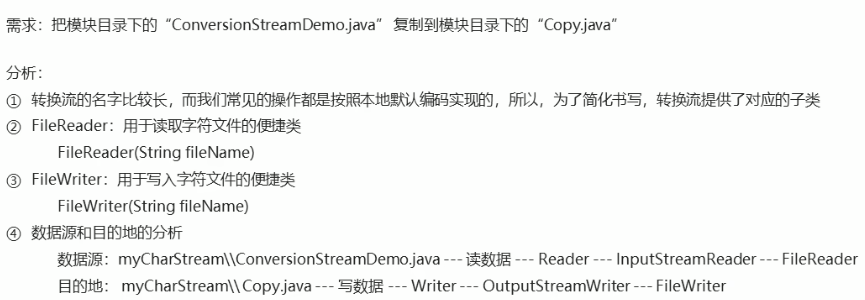
1 2 3 4 5 6 7 8 9 10 11 12 13 14 15 16 17 18 19 20 21 22 23 import java.io.*;public class Main public static void main (String[] args) throws IOException FileReader fr = new FileReader("C:\\Users\\Stell\\Desktop\\Student.java" ); FileWriter fw = new FileWriter("C:\\Users\\Stell\\Desktop\\Student-copy.java" ); int ch; while ((ch = fr.read()) != -1 ) { fw.write(ch); } char [] chs = new char [1024 ]; int len; while ((len = fr.read(chs)) != -1 ) { fw.write(chs, 0 , len); } fw.close(); fr.close(); } }
3.8 字符缓冲流 1 2 3 4 5 6 7 8 9 10 11 12 13 14 15 16 17 java.lang.Object java.io.Reader java.io.BufferedReader public class BufferedReader extends Reader // 构造方法 BufferedReader (Reader in )BufferedReader (Reader in , int size ) java .lang .Object java .io .Writer java .io .BufferedWriter // 将文本写入字符输出流，缓冲字符，以提供单个字符，数组和字符串的高效写入 public class BufferedWriter extends Writer // 构造方法 BufferedWriter (Writer out )BufferedWriter (Writer out , int size )
构造方法中的默认缓冲区【8192】足够大，一般无需指定大小。
1 2 3 4 5 6 7 8 9 10 11 12 13 14 15 16 17 18 19 20 21 22 23 24 25 26 27 28 29 import java.io.*;public class Main public static void main (String[] args) throws IOException FileReader fr = new FileReader("C:\\Users\\Stell\\Desktop\\target.txt" ); FileWriter fw = new FileWriter("C:\\Users\\Stell\\Desktop\\target.txt" ); BufferedWriter bw = new BufferedWriter(fw); bw.write("Hello\r\n" ); bw.write("World" ); bw.close(); BufferedReader br = new BufferedReader(fr); int ch; while ((ch = br.read()) != -1 ) { System.out.print((char ) ch); } char [] chs = new char [1024 ]; int len; while ((len = br.read(chs)) != -1 ) { System.out.print(new String(chs,0 ,len)); } br.close(); } }
3.9 字符缓冲流的特有功能 BufferedWriter 中
void newLine()：写一个行分隔符，其由系统属性 定义【与操作系统有关】BufferedReader 中
public String readLine()：读取一行文字，结果包含行的内容的字符串，不包括任何终止字符 ；如果流的结尾已经到达，则为null 1 2 3 4 5 6 7 8 9 10 11 12 13 14 15 16 17 18 19 20 21 22 23 24 25 26 27 28 29 import java.io.*;public class Main public static void main (String[] args) throws IOException BufferedWriter bw = new BufferedWriter(new FileWriter("C:\\Users\\Stell\\Desktop\\target.txt" )); for (int i = 0 ; i < 2 ; i++) { bw.write("Hello" + i); bw.newLine(); bw.flush(); } bw.close(); BufferedReader br = new BufferedReader(new FileReader("C:\\Users\\Stell\\Desktop\\target.txt" )); String line = br.readLine(); System.out.println(line); while ((line = br.readLine()) != null ) { System.out.println(line); } br.close(); } }
3.10 小结
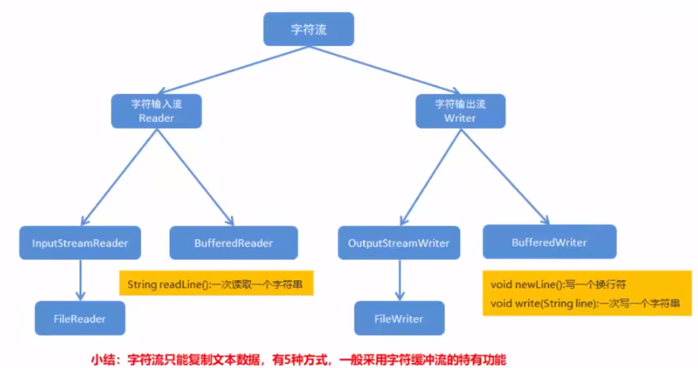
3.11 案例 ① 集合到文件 需求 ：把 ArrayList 集合中的字符串数据写入到文本文件。
要求 ：每一个字符串元素作为文件的一行数据
思路
创建ArrayList 集合，并加入数据 创建字符输出流对象 遍历集合并写入 释放资源 1 2 3 4 5 6 7 8 9 10 11 12 13 14 15 16 17 18 19 20 21 22 import java.io.*;import java.util.ArrayList;public class Main public static void main (String[] args) throws IOException ArrayList<String> arr = new ArrayList<>(); arr.add("Hello" ); arr.add("World" ); arr.add("Java" ); BufferedWriter bw = new BufferedWriter(new FileWriter("C:\\Users\\Stell\\Desktop\\target.txt" )); for (String s:arr){ bw.write(s); bw.newLine(); bw.flush(); } bw.close(); } }
② 文件到集合 需求 ：把文件中的数据读取到 ArrayList 集合，并遍历。
要求 ：文件中的每一行数据是一个集合元素。
1 2 3 4 5 6 7 8 9 10 11 12 13 14 15 16 17 18 19 20 21 import java.io.*;import java.util.ArrayList;public class Main public static void main (String[] args) throws IOException BufferedReader br = new BufferedReader(new FileReader("C:\\Users\\Stell\\Desktop\\target.txt" )); ArrayList<String> arr = new ArrayList<>(); String line; while ((line = br.readLine()) != null ) { arr.add(line); } br.close(); for (String s : arr) { System.out.println(s); } } }
③ 点名器 需求 ：文件中存储了班级同学的姓名，每一个姓名占一行，要求通过程序实现随机点名器
思路
创建字符输入流对象 创建ArrayList 集合对象 调用字符缓冲输入流对象的方法读数据，并存入集合 释放资源 使用Random产生随机数【1~集合长度） 使用随机数作为索引值，到集合中取数据并输出 1 2 3 4 5 6 7 8 9 10 11 12 13 14 15 16 17 18 19 20 21 22 23 24 25 import java.io.*;import java.util.ArrayList;import java.util.Random;public class Main public static void main (String[] args) throws IOException BufferedReader br = new BufferedReader(new FileReader("C:\\Users\\Stell\\Desktop\\target.txt" )); ArrayList<String> arr = new ArrayList<>(); String line; while ((line = br.readLine()) != null ) { arr.add(line); } br.close(); Random r = new Random(); int index = r.nextInt(arr.size()); String name = arr.get(index); System.out.println("随机者是：" + name); } }
④ 集合到文件【数据排序改进版】 需求 ：键盘录入5个学生的信息【姓名，语文成绩，数学成绩，英语成绩】。要求按照成绩总分从高到低排序，并输出到文件
思路
定义学生类 创建TreeSet集合，通过比较器进行排序 键盘录入，创建学生对象并赋值 将学生加入集合 创建字符输出缓冲流对象 遍历集合，得到每一个学生对象，把学生数据拼接成字符串 调用字符缓冲输出流对象的方法写数据 释放资源 1 2 3 4 5 6 7 8 9 10 11 12 13 14 15 16 17 18 19 20 21 22 23 24 25 26 27 28 29 30 31 32 33 34 35 36 37 38 39 40 41 42 43 44 45 46 47 48 49 50 51 52 53 54 55 56 57 58 59 import java.io.*;import java.util.*;public class Main public static void main (String[] args) throws IOException TreeSet<Student> ts = new TreeSet<>(new Comparator<Student>() { @Override public int compare (Student s1, Student s2) int num = s2.getTotal() - s1.getTotal(); int num2 = num == 0 ? s1.getChinese() - s2.getChinese() : num; int num3 = num2 == 0 ? s1.getMath() - s2.getMath() : num2; int num4 = num3 == 0 ? s1.getName().compareTo(s2.getName()) : num3; return num4; } }); for (int i = 0 ; i < 5 ; i++) { Student s = new Student(); Scanner sc = new Scanner(System.in); System.out.println("请输出第" + i + "个学生信息：" ); System.out.println("姓名：" ); s.setName(sc.nextLine()); System.out.println("语文成绩：" ); s.setChinese(sc.nextInt()); System.out.println("数学成绩：" ); s.setMath(sc.nextInt()); System.out.println("英语成绩：" ); s.setEnglish(sc.nextInt()); ts.add(s); } BufferedWriter bw = new BufferedWriter(new FileWriter("C:\\Users\\Stell\\Desktop\\target.txt" )); for (Student s : ts) { StringBuffer sb = new StringBuffer(); sb.append(s.getName()).append("," ); sb.append(s.getChinese()).append("," ); sb.append(s.getMath()).append("," ); sb.append(s.getEnglish()).append("," ); sb.append(s.getTotal()); bw.write(sb.toString()); bw.newLine(); bw.flush(); } bw.close(); } }
⑤ 复制单级文件夹 需求 ：把 E:\About Chase\Art of Programming-2023\Java\LearnJava\demo\src 文件夹复制到桌面【其中有各类文件】
思路
创建数据源目录File对象，路径是… 获取数据源目录 File 对象的名称 src 创建目的地目录 File 对象，路径是…【桌面路径】 判断目的地目录对应的 File 是否存在，如果不存在，就创建 获取数据源目录下的文件的 File 数组 遍历 File 数组，得到每一个 File 对象【源文件】 获取数据源文件File 对象的名称 创建目的地文件File 对象，构建目的地路径名 复制文件【使用字节流】 1 2 3 4 5 6 7 8 9 10 11 12 13 14 15 16 17 18 19 20 21 22 23 24 25 26 27 28 29 30 31 32 33 34 35 36 37 38 39 40 41 42 import java.io.*;public class Main public static void main (String[] args) throws IOException File srcFolder = new File("E:\\About Chase\\Art of Programming-2023\\Java\\LearnJava\\demo\\src" ); String srcFolderName = srcFolder.getName(); File destFolder = new File("C:\\Users\\Stell\\Desktop" , srcFolderName); if (!destFolder.exists()) { destFolder.mkdir(); } File[] listFile = srcFolder.listFiles(); for (File f : listFile) { String fName = f.getName(); File destFile = new File(destFolder, fName); copyFile(f, destFile); } } private static void copyFile (File f, File destFile) throws IOException BufferedInputStream bis = new BufferedInputStream(new FileInputStream(f)); BufferedOutputStream bos = new BufferedOutputStream(new FileOutputStream(destFile)); byte [] bys = new byte [1024 ]; int len; while ((len = bis.read(bys)) != -1 ) { bos.write(bys, 0 , len); } bis.close(); bos.close(); } }
Alt + Enter 可对未声明的方法，自动生成方法声明
⑥ 复制多级文件夹【递归】 需求 ：把 E:\About Chase\Art of Programming-2023\Java\LearnJava 文件夹复制到桌面【其中有各类文件及文件夹】
思路
创建数据源目录File对象，路径是… 创建目的地目录 File 对象，路径是…【桌面路径】 写方法实现文件夹的复制，参数为数据源 File 对象和目的地 File 对象 判断数据源 File 是否为目录：如果是，则：创建同名目录 获取数据源目录下所有文件和目录的 File 数组 遍历 File 数组，得到每一个 File 对象【文件 | 目录】 把该 File 作为数据源 File 对象，递归调用复制文件夹的方法 如果不是【即文件】，使用字节流复制 1 2 3 4 5 6 7 8 9 10 11 12 13 14 15 16 17 18 19 20 21 22 23 24 25 26 27 28 29 30 31 32 33 34 35 36 37 38 39 40 41 42 43 44 45 46 47 48 49 import java.io.*;public class Main public static void main (String[] args) throws IOException File srcFolder = new File("E:\\About Chase\\Art of Programming-2023\\Java\\LearnJava" ); File destFile = new File("C:\\Users\\Stell\\Desktop" ); copyFolder(srcFolder, destFile); } private static void copyFolder (File srcFolder, File destFile) throws IOException String srcFileName = srcFolder.getName(); if (srcFolder.isDirectory()) { File newFolder = new File(destFile, srcFileName); if (!newFolder.exists()) { newFolder.mkdir(); } File[] listFile = srcFolder.listFiles(); for (File f : listFile) { copyFolder(f, newFolder); } } else { File newFile = new File(destFile, srcFileName); copyFile(srcFolder, newFile); } } private static void copyFile (File f, File destFile) throws IOException BufferedInputStream bis = new BufferedInputStream(new FileInputStream(f)); BufferedOutputStream bos = new BufferedOutputStream(new FileOutputStream(destFile)); byte [] bys = new byte [1024 ]; int len; while ((len = bis.read(bys)) != -1 ) { bos.write(bys, 0 , len); } bis.close(); bos.close(); } }
3.12 复制文件的异常处理 此处使用 try-catch-finally 完成异常处理【标准，但较复杂】
1 2 3 4 5 6 7 8 9 10 11 12 13 14 15 16 17 18 19 20 21 22 23 24 25 26 27 28 29 30 31 32 33 34 35 36 37 38 39 40 41 42 43 44 45 46 47 48 49 50 import java.io.FileReader;import java.io.FileWriter;import java.io.IOException;public class Main public static void main (String[] args) } private static void method2 () FileReader fr=null ; FileWriter fw=null ; try { fr = new FileReader("C:\\Users\\Stell\\Desktop\\source.txt" ); fw = new FileWriter("C:\\Users\\Stell\\Desktop\\target.txt" ); int ch; while ((ch = fr.read()) != -1 ) { fw.write(ch); } char [] chs = new char [1024 ]; int len; while ((len = fr.read(chs)) != -1 ) { fw.write(chs, 0 , len); } } catch (IOException e) { e.printStackTrace(); } finally { if (fw!=null ){ try { fw.close(); }catch (IOException e) { e.printStackTrace(); } } if (fr!=null ){ try { fr.close(); }catch (IOException e) { e.printStackTrace(); } } } } }
JDK7 改进方案【无需抛出异常】【建议】
JDK9 改进方案【需要抛出异常】
1 2 3 4 5 6 7 8 9 10 11 12 13 14 15 16 try (定义流对象) { 可能出现的异常代码; } catch (异常类名 变量名) { 异常处理代码; } 定义输出输入流对象; try (输入流对象; 输出流对象) { 可能出现的异常代码; } catch (异常类名 变量名) { 异常处理代码; }
1 2 3 4 5 6 7 8 9 10 11 12 13 14 15 16 17 18 19 20 21 22 23 24 25 26 27 28 29 30 31 32 33 34 35 36 37 38 39 40 41 42 43 44 45 46 47 48 49 50 51 52 53 54 55 56 import java.io.FileReader;import java.io.FileWriter;import java.io.IOException;public class Main public static void main (String[] args) } private static void method3 () try (FileReader fr = new FileReader("C:\\Users\\Stell\\Desktop\\source.txt" ); FileWriter fw = new FileWriter("C:\\Users\\Stell\\Desktop\\target.txt" );) { int ch; while ((ch = fr.read()) != -1 ) { fw.write(ch); } char [] chs = new char [1024 ]; int len; while ((len = fr.read(chs)) != -1 ) { fw.write(chs, 0 , len); } } catch (IOException e) { e.printStackTrace(); } } private static void method4 () throws IOException FileReader fr = new FileReader("C:\\Users\\Stell\\Desktop\\source.txt" ); FileWriter fw = new FileWriter("C:\\Users\\Stell\\Desktop\\target.txt" ); try (fr; fw) { int ch; while ((ch = fr.read()) != -1 ) { fw.write(ch); } char [] chs = new char [1024 ]; int len; while ((len = fr.read(chs)) != -1 ) { fw.write(chs, 0 , len); } } catch (IOException e) { e.printStackTrace(); } } }
4、特殊操作流 4.1 标准输入输出流 1 2 3 4 java.lang.Object java.lang.System public final class System extends Object
System 类中有两个静态的成员变量：
public static final InputStream in：标准输入流。通常该流对应于键盘输入或由主机环境或用户指定的另一个输入流【字节流】public static final PrintStream out：标准输出流。通常该流对应于显示输出或由主机环境或用户指定的另一个输出目标1 2 3 4 5 6 7 8 9 10 11 12 13 14 15 16 17 18 19 20 21 22 23 24 25 26 27 28 29 30 31 32 import java.io.BufferedReader;import java.io.IOException;import java.io.InputStream;import java.io.InputStreamReader;import java.util.Scanner;public class Main public static void main (String[] args) throws IOException InputStream is = System.in; InputStreamReader isr = new InputStreamReader(is); BufferedReader br = new BufferedReader(isr); System.out.println("请输入一个字符串：" ); String line = br.readLine(); System.out.println("你输出的字符是：" + line); System.out.println("请输入一个整数：" ); int i = Integer.parseInt(br.readLine()); System.out.println("你输出的整数是：" + i); Scanner sc = new Scanner(System.in); } }
标准输出流
java.lang.Object
java.io.OutputStream
java.io.FilterOutputStream
java.io.PrintStream 【具体类 字节输出流】
PrintStream为另一个输出流添加了功能，即能够方便地打印各种数据值 的表示：
void print(类型 x) ：注意：print 必须带参数void println(类型 x)还提供了另外两个功能： 与其他输出流不同， PrintStream从不抛出IOException ; 相反，异常情况只是设置一个可以通过checkError方法测试的内部标志。 可以选择一个PrintStream ，以便自动刷新; 这意味着flush字节数组写入方法后自动调用，所述一个println方法被调用时，或者一个新行字符或字节（ '\n' ）被写入。
1 2 3 4 5 6 7 8 9 10 11 12 13 14 15 import java.io.PrintStream;public class Main public static void main (String[] args) PrintStream ps = System.out; ps.print("hello" ); ps.println("hello" ); System.out.println("hello" ); } }